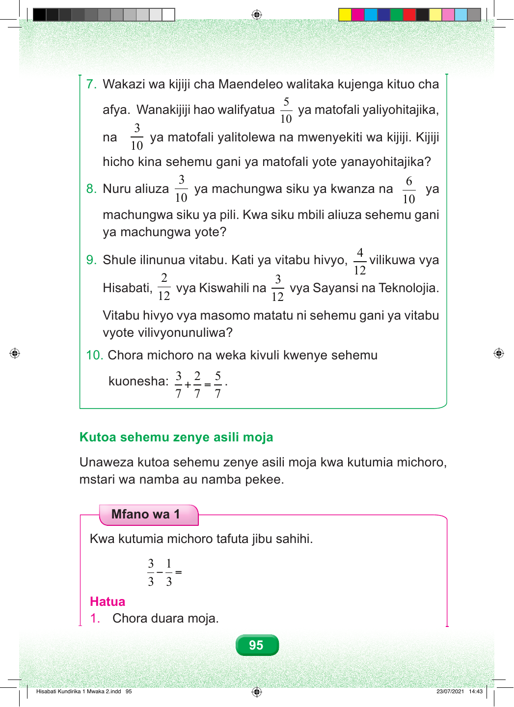

Swali namba saba. Wakazi wa kijiji cha Maendeleo walitaka kujenga kituo cha afya. Wanakijiji walifyatua tano ya kumi ya matofali yaliyohitajika, na tatu ya kumi yalitolewa na mwenyekiti wa kijiji. Kijiji kina sehemu gani ya matofali yote yanayohitajika? Swali namba nane. Nuru aliuza tatu ya kumi ya machungwa siku ya kwanza, na sita ya kumi siku ya pili. Kwa siku mbili aliuza sehemu gani ya machungwa yote? Swali namba tisa. Shule ilinunua vitabu. Nne ya kumi na mbili vilikuwa vya Hisabati, mbili ya kumi na mbili vya Kiswahili, na tatu ya kumi na mbili vya Sayansi na Teknolojia. Vitabu vya masomo hayo matatu ni sehemu gani ya vitabu vyote? Swali namba kumi. Chora michoro na weka kivuli kuonesha: tatu ya saba jumlisha mbili ya saba, sawa sawa na tano ya saba. 7 7 7 Kutoa sehemu zenye asili moja. Unaweza kutoa sehemu zenye asili moja kwa kutumia michoro, mstari wa namba au namba pekee. Mfano wa Kwanza Kwa kutumia michoro, tafuta jibu sahihi. Tatu ya tatu kutoa moja ya tatu, sawa sawa na ngapi? Hatua. Hatua ya kwanza. Chora duara moja. 95 Hisabati Kundirika 1 Mwaka 2.indd 95 23/07/2021 14:43